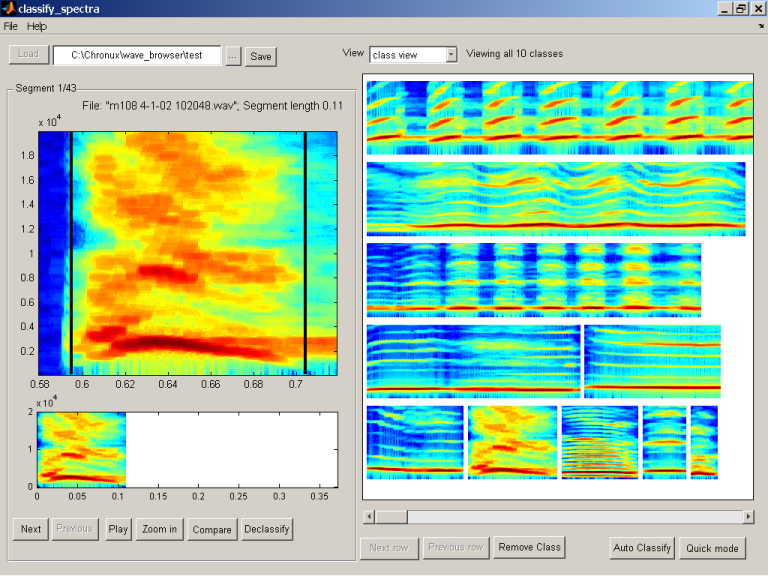

The first task in classifying segments is to load predefined segments in a directory using the Load button. Segments are predefined by the wave_browser software which generates "*.seg.txt" files. If you have just "*.wav" files in a directory and no "*.seg.txt" files then no segments will be loaded. A directory to load can be selected using the "..." button. Classify_spectra will load all defined segments from a directory. Each directory should be considered as a separate database.
If you are successful loading a directory a progress bar will appear. Depending on the number of segments and the speed of the processor computing all the spectragrams for the segments can take a considerable amount of time. When one is finished precomputing the segments click the Save button. This will make it unnecessary to recompute the spectra the next time the directory is loaded.
There are several methods to navigate the segments in a directory. The current selected segment is shown on the left. To change the current segment use can use the Next and Previous buttons. Segments are ordered time sequentially and are grouped by the wave file they originated from. Above the larger view of the segment is information about the current segment. The information gives the current segment number, the wav file the segment comes from, and the segment length.
For directories with a large number of segments navigating with the Next and Previous buttons can be slow. By selecting all from the View drop-down menu all segments in the directory are shown on the right axes. Clicking on the icon of the spectragram will make the selected segment the current segment. If there are large number of segments in a directory all the defined segments will not be shown. One can navigate the segments in a directory by clicking the Next row and Previous row buttons.
A third method exists for navigating segments is in the class members view in the View drop-down menu. For a defined class you can click on a class member on the right axes.

There are several methods for classifying a segments. The most direct way of classifying the current segment on the left is to use the Classify button. A New Class button appears adjacent to the disabled Classify button. If no classes have been defined, the axes on the right are blank, clicking New Class. By generating a new class will bring you into the class view. Notice that the classify button has been changed to a Declassify button. If you choose not to define a class clicking anywhere on the blank axes will reenable the Classify button and hide the New Class button.
If you already have classes defined click on the class on right will classify the segment. By default the classes on the right are organized in descending segment length. If there are more classes than fit on the current axes the closest matching size segment automatically will be placed in the middle of the axes. Using the Sort drop-down menu you can also sort the classes by popularity or by the original order of the defined classes. Popularity is defined by the number of members which belong to that class.
By clicking on the Declassify button will remove the classification for the current segment. The current segment can now be reclassified or skipped. While navigating through the segments you can see whether a segment is classified by the label Declassify. Unclassified segments will have the label Classify. To view all unclassified segments select from the View drop-down menu unclassified.By clicking the Save button along the way your classification will be saved.
An alternative and faster method for classifying exists. By clicking on the Quick mode toggle button the quick mode for classification is entered. Quick mode will automatically forward to the next unclassified segment. Three buttons will appear on the top right to facilitate faster classification. The New button generates a new class, the Skip button advances to the the next unclassified segment, and Review last takes you out of quick mode and back to the last classified segment. To classify in quick mode just click a class on the right. After each classification the next unclassified segment will appear. At any time quick mode can be exited by clicking the Quick mode toggle button. If all segments are classified quick mode will be automatically exited.
An additional method for classification exists when in comparison mode. By clicking on the enabled Classify button the user will classify the current segment as the class that is being compared to. This will skip the normal classify view.
The final method for classifying is to click the Auto Classify Button which will allow the classification to be made automatically.

Class view allows you to view all defined classes on the right axes. Class view is entered by selecting class view from the View drop-down menu. By clicking on a class you can view all members of the class. This view is known as class members mode. In class view mode one can also remove a defined class and declassify all class members. By clicking the Remove Class button and selecting a class on the right a prompt will appear about whether you want to remove the class and and all its members. By selecting Yes the class will be removed.
To compare a segment against a class click on the Compare toggle button. The user will be presented with a class view. By clicking on a class on the right axes the current segment will be compared to the selected class. The current segment will be the first segment and the class being compared to will be the second class. If the current segment is unclassified you can classify it by clicking the Classify button on the lower left.
When comparing the current segment clicking the Compare toggle button will not take you entirely out of the comparison mode. Rather you will be brought back to the class view where you can select another class to compare the current segment against. If the user wants to exit the comparison mode click the Compare toggle button a second time.
In order to make a comparison more carefully it is useful to zoom in on a specific frequency range of the spectragram. The Zoom in button will zoom into the specified frequency. The first time the the Zoom in button is hit the precomputed spectragram are resampled. The frequency range for the zoom can be set in the Configuration window.

There are two ways to view all members of a specific class. The first is by selecting the class in the class view. The second is to select class members from the View drop-down menu. When this is done all members belonging to the the same class as the currently selected segment are shown on the right.
When a new class is defined the spectra of the first member of the class is used to represent or typify the class. The spectra of the typified segment is used in the class view and when making a comparison. The segment which typifies the class can be changed in the class members view. By clicking the Typify button and selecting a class member on the right. When a member is successfully selected to typify a class the Typify button is reenabled. By clicking in the area between the class members the typifying class is not changed and the Typify button is reenabled.
Each class is automatically assigned a name when a new class is created. The class name can be changed by clicking Rename Class. A dialog box will appear titled Edit class name where the name can be changed. By clicking Ok the name change will be accepted. If the name is already assigned a second dialog box will appear asking if you want to merge the two classes with the same name. By clicking Yes the classes will be merged.
The next class button allows you to forward to the next class without leaving the class members view.

Classify_spectra can be configured by the user. The first set of configuration is for how the software view manipulates spectra.
A spectragram is a visual representation of how the intensity of sound frequencies change over time. Classify_spectra uses a multitaper approach to compute the spectragram. The log transformed intensities are plotted. Parameters used to compute the spectragram can be modified by the user. If these parameters are changed the spectragrams for all the segments will need to be recomputed.